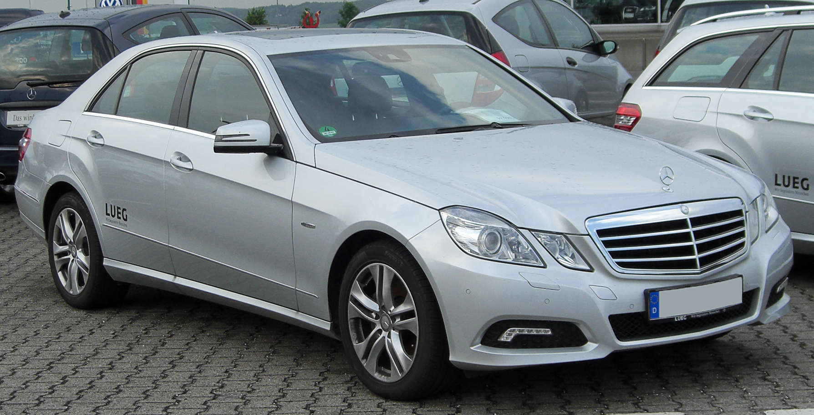

Mercedes-Benz E osztály

Az első generáció
1993-ban a 124-es gyártási ciklusának utolsó négy évére jelent meg hivatalosan az „E” típusjelzés, amikortól minden Mercedes modellkategóriát betűvel kezdtek jelölni. Fontos, hogy ezt nem szabad összetéveszteni a különféle Mercedesek típusszáma után szereplő E-betűvel, ami a benzinbefecskendezést jelölte már a betűkód bevezetése előtt is, és nem is csak E-kategóriás modelleken.
A második generáció

A W210-es széria 1995-ben mutatkozott be, és a középkategória felső végén és a luxuskategória határán helyezkedett el. Jellegzetes kör alakú fényszórói a ’60-as évekre emlékeztettek. A motorpaletta ismét bővült: a benzinesek között már csak befecskendezésesek voltak, amelyeket dupla vezérműtengellyel és hengerenként négy szeleppel gyártottak. Megújultak a dízelmotorok is: mindegyik közvetlen befecskendezést és elektromos üzemanyag ellátást kapott. A négysebességes mechanikus váltók végleg eltűntek.
A biztonsági felszereltség rendkívül nagyot fejlődött, kívánságra négy légzsákkal és „Isofix” biztonsági gyermekülésekkel is lehetett rendelni.
1999 szeptemberében bemutatták a frissített változatot, ami vizuális, mechanikai és minőségi javulással is járt. A ráncfelvarrás során több mint 1500 dolgot módosítottak, például az oldalindexek a visszapillantó tükrökbe kerültek. Természetesen frissítették a motorpalettát is, ennek során került be a friss E osztályba például a „Common rail” (a közvetlen üzemanyag-befecskendező rendszer továbbfejlesztett változata) dízelmotor. A többi között is csak közös nyomócsöves turbódízelek voltak. A két legerősebb a soros hathengeres 320 CDI és az öthengeres 270 CDI. A korábbi automata sebességváltókat felváltotta az új, ötsebességes szekvenciális („ultratronic”) váltó. A típus számos bírálatot is kapott, leginkább a korrózió miatt kritizálták. Ennek és a későbbi típusok hatajtós változatait az egyéb különleges, például mentős változatokhoz hasonlóan már külsős cégek gyártották külön rendelésre, mint a márkával szoros kapcsolatban álló Binz.
A harmadik generáció
A W211-es sorozat 2002-ben indult, és – még az amerikai megjelenés előtt – a Men in Black – Sötét zsaruk 2. című filmben is bemutatkozott. Külső megjelenésében sokban emlékeztetett az előző, W210-es modellre. Ismét bővült a motorpaletta: megjelent a V6-os és V8-as CDI, utóbbi 310 lóerős teljesítménnyel és 730 Nm nyomatékkal.
Újdonság volt a hat- és hétsebességes „G-tronic” váltó, emellett tovább fokozták az autó biztonságát. Elektromechanikus féket kapott (SBC), ahol a fékpedál nincs közvetlen kapcsolatban a kerekekkel, 2006-ban történt Facelift után ezt a rendszert nem alkalmazták a sok meghibásodás miatt, és közel kétezer új alkatrészt terveztek a modellhez. Van ötfokozatú automata váltós és hétfokozatú automata váltós változat is. A manuális váltóval szerelt diesel gépkocsik 3 literrel kevesebbet fogyasztanak, mint az automaták.
2005-ben bevezették a W211 alapjaira épülő W219 CLS-Class 4-ajtós kupét, melyben szintén volt SBC. 2006-ban megújították a szériát, a Sensotronicot elvetették, beépítettek egy ütközéselhárító rendszert. Új motorok is megjelentek, az E osztály legnagyobb erőforrásai, az 5 és 5,5 literes E500 (az USA-ban E550). 2007-től közös nyomócsöves, közvetlen befecskendezésű dízelmotort is alkalmaztak. A legjobb diesel motorok a 270CDI és a 320CDI.
Adatlap
|
https://hu.wikipedia.org/wiki/Mercedes-Benz_E_oszt%C3%A1ly